1과목: 건축계획
1. 학교건축에서 단층교사의 이점이 아닌 것은?
2. 주택의 부엌에서 작업삼각형(Work Triangle)의 구성요소에 속하지 않는 것은?
3. 공장건축의 레이아웃(layout) 계획에 관한 설명으로 옳지 않은 것은?
4. 공동주택의 관한 설명으로 옳지 않은 것은?
5. 계단실형인 공동주택의 계단실에 관한 설명으로 옳지 않은 것은?
6. 다음 설명에 알맞은 사무소 건축의 복도형식은?
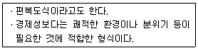
7. 사무실 건축의 엘리베이터 배치시 고려사항으로 옳지 않은 것은?
8. 다음 중 근린주구 생활권의 주택지의 단위로서 규모가 가장 작은 것은?
9. 다음 설명에 알맞은 학교운영방식은?
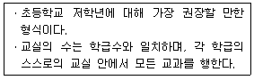
10. 고리형이라고도 하며 통과교통은 없으나 사람과 차량의 동선이 교차된다는 문제점이 있는 중택단지의 접근도로 유형은?
11. 사무소 건축의 실 단위계획 중 개방식 배치에 관한 설명으로 옳지 않은 것은?
12. 주택의 동선계획에 관한 설명으로 옳지 않은 것은?
13. 다음 중 상점 쇼윈도의 눈부심(glare)을 방지하기 위한 방법과 가장 거리가 먼 것은?
14. 사무소 건축의 화장실 위치에 관한 설명으로 옳지 않은 것은?
15. 생리적인 면을 고려한 6세 이상의 아동 2인용 침실의 면적으로 적당한 것은? (단, 6세 이상 아동 1인의 소요공기랑은 25m3/h, 자연환기횟수는 2회/h, 천장높이는 2.5m이다.)
16. 학교운영방식 중 플래툰형에 관한 설명으로 옳은 것은?
17. 상점의 판매방식에 대한 설명을 옳지 않은 것은?
18. 공장건축의 형식 중 파빌리언(pavilion type)에 관한 설명으로 옳지 않은 것은?
19. 백화점 매장의 배치유형 중 직각배치형에 관한 설명으로 옳지 않은 것은?
20. 상점의 매장 및 파사드 구성에 요구되는 AIDMA 법칙에 속하지 않는 것은?
2과목: 건축시공
21. 로이유리(Low Emissivity)에 대한 설명으로 옳지 않은 것은?
22. 목공사에서 건축연면적(m2)당 먹매김의 품이 가장 많이 소요되는 건축물은?
23. 시공줄눈 설치이유 및 설치위치로 잘못된 것은?
24. 블록쌓기 시 주의사항으로 옳지 않은 것은?
25. 관리 사이클의 단계를 바르게 나열한 것은?
26. 어스엥커식 흙막이 공법에 관한 기술로 옳은 것은?
27. 목공사에 관한 설명 중 옳지 않은 것은?
28. 벽돌쌓기에서 방수 하자 발성과 관련하여 가장 주의를 요하는 부분은?
29. 실내 마감용 대리석 붙이기에 사용되는 재료로서 가장 적합한 것은?
30. 목구조의 따낸 이음 중 휨에 가장 효과적인 이음은?
31. 연악한 점토지반의 전단강도를 결정하는데 가장 보편적으로 사용되는 현장시험 방법은?
32. 콘크리트 비빔용수의 적합한 품질(상수돗물 이외의 물의 품질)기준으로 옳지 않은 것은?
33. 평지붕 방수공사의 재료로서 사용되지 않는 것은?
34. 콘크리트 진동다짐에 대한 설명 중 옳지 않은 것은?
35. 건설기계 중 지반다짐기계가 아닌 것은?
36. 지붕공사 시 사용되는 금속판에 대한 설명으로 옳지 않은 것은?
37. 왕대공 지붕틀의 ㅅ자보 계산에 고려해야 하는 힘의 조합으로 옳은 것은?
38. 건설공사에서 입찰과 계약에 관한 사항으로 옳지 않은 것은?
39. PERT/CPM 기법의 장점으로 옳지 않은 것은?
40. 미장공사 중 시멘트 모르타르 미장에 관한 설명으로 옳지 않은 것은?
3과목: 건축구조
41. 다음은 옹벽 구조물 설계에 있어서 활동 및 전도에 대한 안정조건이다. ( ) 안에 들어갈 수치를 순서대로 옳게 나열한 것은?
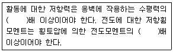
42. 다음 각 슬래브에 대한 설명으로 옳지 않은 것은?
43. 강도설계법에서 단철근 직사각형보의 등가응력 깊이 a를 구하면? (단, fy = 300MPa, fck = 21MPa)
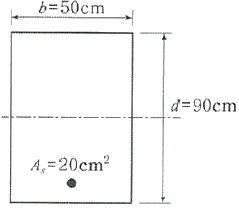
44. 그림과 같은 부정정 보의 B점 에서의 반력 RB를 구하면?(오류 신고가 접수된 문제입니다. 반드시 정답과 해설을 확인하시기 바랍니다.)
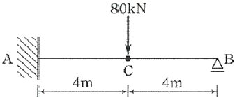
45. 그림과 같은 철근콘크리트기둥에서 띠철근의 수직간격으로 옳은 것은?
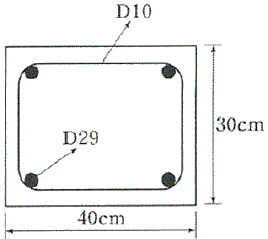
46. 그림과 같은 보의 단부(A점)와 중앙부(C점)에서의 휨모멘트 비율 MA : MC는?
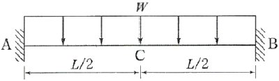
47. 압축을 받는 D22 이형철근의 기본정착길이를 구하면? (단, 경량콘크리트계수 = 1, fck = 25MPa, fy = 400MPa)
48. 다음 그림은 단순보의 임의 점에 집중 하중 1개가 작용하었을 때의 전단력도를 나타낸 것이다. C점의 휨모멘트는 얼마인가?
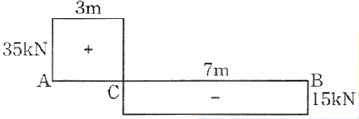
49. 강도설계법에 의한 철근콘크리트 설계에서 보의 휨 강도 산정시 기본 가정으로 옳지 않은 것은?
50. 강도설계법에 의한 철근콘크리트 설계 시 강도감소계수 값으로 옳지 않은 것은?
51. 그림과 같은 단순보에서 A점의 수직반력은?
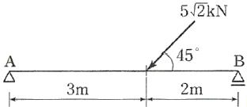
52. 압축부재의 유효좌굴길이는 무엇으로 결정되는가?
53. 그림과 같은 아치구조물에서 A점의 수평 반력은?
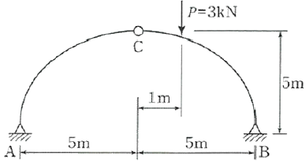
54. 다음 구조물의 부정정 차수는?
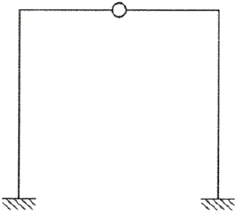
55. 철근콘크리트 구조로도 이용되는 H. P쉘(hyperbolic paraboloid shell)에 관한 설명으로 옳지 않은 것은?
56. 그림과 같은 삼각형의 밑변을 지나는 X축에 대한 단면2차 모멘트는?
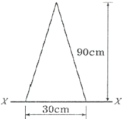
57. 강도설계법에서 보통콘크리트와 설계기준항복강도 400MPa 철근을 사용한 양단 연속 1방향 슬래브의 스팬이 4.2m일 때 처짐을 계산하지 않는 경우의 슬래브 최소 두께로 옳은 것은?
58. 허용압축응력이 6MPa인 정사각형 소나무기둥이 60kN의 압축력을 받는 경우 한 변의 길이는 최소 얼마 이상으로 해야 하는가?
59. 강도설계법에서 고정하중 D와 적재하중 L의 소요강도에 대한 하중조합으로 옳은 것은?
60. 그림과 같은 구조물에서 A점의 휨모멘트는?
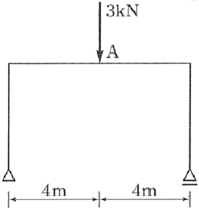
4과목: 건축설비
61. 옥내소화전설비에 관한 설명으로 옳은 것은?
62. 옥내의 습기가 많은 노출장소에서 시설이 가능한 배선 공사는?
63. 다음과 같이 정의되는 전기설비 관련 용어는?
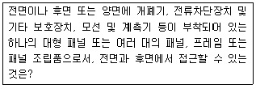
64. 온수난방에 관한 설명으로 옳지 않은 것은?
65. 35℃의 옥외공기 30kg과 27℃의 실내공기 70kg을 단열혼합 하었을 때 혼합공기의 온도는?
66. 펌프의 회전수가 100rpm에서 전양정이 40m인 펌프가 었다. 회전수를 50rpm으로 감소시켰을 때 전양정은?
67. 피뢰설비의 수뢰부시스템 설치시 사용되는 보호범위 산정방식에 속하지 않는 것은?
68. 공기조화방식 중 전공기 방식에 관한 설명으로 옳지 않은 것은?
69. 환기방식에 관한 설명으로 옳지 않은 것은?
70. 가스 사용시설의 지상배관은 어떤 색으로 도색하는 것이 원칙인가?
71. 아네모스탯형 취출구에 관한 설명으로 옳지 않은 것은?
72. 자동화재 탐지설비의 감지기 중 설치된 감지기의 주변온도가 일정한 온도상승률 이상으로 되었을 경우에 작동하는 것은?
73. 대변기의 세정방식에 관한 설명으로 옳지 않은 것은?
74. 급수방식 중 고가탱크방식에 관한 설명으로 옳지 않은 것은?
75. 역류를 방지하여 오염으로부터 상수계통을 보호하기 위한 방법으로 옳지 않은 것은?
76. 배수용 트랩에 속하지 않는 것은?
77. 다음 중 변전실의 높이 결정 시 고려할 사항과 가장 관계가 먼 것은?
78. 다음 중 습공기를 가열하였을 경우 증가하지 않는 것은?
79. 통기관의 설치목적과 가장 관계가 먼 것은?
80. 중앙식 급탕방식 중 간접가열식에 관한 설명으로 옳지 않은 것은?
5과목: 건축관계법규
81. 노외주차장의 차로의 최소 너비가 작은 것에서 큰 것 순으로 올바르게 나열한 것은? (단, 이륜자동차전용 외의 노외주차장으로서 출입구가 2개 이상인 경우)
82. 특별시나 광역시에 건축할 경우, 특별시장이나 광역시장의 허가를 받아야 하는 대상 건축물의 연면적 기준은?
83. 허가 대상 가설건축물로서 존치기간을 연장하려는 가설 건축물의 건축주는 존치기간 만료일 몇 일 전까지 허가를 신청하여야 하는가?
84. 건폐율에 관한 설명으로 가장 알맞은 것은?
85. 피난안전구역의 설치에 관한 기준 내용으로 옳지 않은 것은?
86. 층의 구분이 명확하지 않은 건축물의 층수 산정 방법으로 옳은 것은?
87. 건축법령상 단독주택에 속하지 않는 것은?
88. 면적이 5000m2인 대지에 연면적의 합계가 2000m2인 공장을 건축하려고 한다. 이 경우 확보하여야 할 최소 조경 면적은?
89. 다음 중 부설주차장의 최소 설치대수가 가장 많은 시설물은? (단, 시설면적이 1000m2인 경우)
90. 건축물의 대지 안에는 그 건축물 바깥쪽으로 동하는 주된 출구와 지상으로 통하는 피난계단 및 특별피난계단으로부터 도로 또는 공지로 통하는 통로를 설치하여야 하는데, 이 통로의 유효 너비는 최소 얼마 이상이어야 하는가? (단, 바닥면적의 합계가 500m2 이상인 문화 및 집회시설의 경우)
91. 다음 중 대지 및 건축물 관련 건축기준의 허용오차(백분율)가 가장 적은 것은?
92. 노상주차장의 구조ㆍ설비에 관한 기준 내용으로 옳지 않은 것은?
93. 토지의 이용 및 건축물의 용도ㆍ건폐율ㆍ용적률ㆍ높이 등에 대한 용도지역의 제한을 강화하거나 완화하여 적용함으로써 용도지역의 기능을 증진시키고 미관ㆍ경관ㆍ안전 등을 도모하기 위하여 도시 ㆍ군관리계획으로 결정하는 지역은?
94. 건축물의 건축시 원칙적으로 조경 등의 조치를 하여야 하는 대지 면적 기준은?
95. 제2종 일반주거지역에서 건축할 수 없는 건축물은?
96. 다음은 건축선에 따른 건축제한에 관한 기준 내용이다. ( )안에 알맞은 것은?
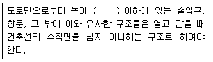
97. 허가대상 건축물이라 하더라도 미리 특별자치시장ㆍ특별자치도지사 또는 시장ㆍ군수ㆍ구청장에게 신고를 하면 건축허가를 받은 것으로 보는 경우에 속하지 않는 것은?
98. 다음과 같은 건축물의 높이는? (단, 건축면적 400m2, 옥탑의 수평투영면적 40m2이다.)
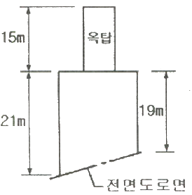
99. 기계식 주차장의 형태에 속하지 않는 것은?
100. 다음 중 건축법령상 주요구조부에 속하는 것은?